+4% урона соседей · радиус 160
Полные векторные модели размером 128 × 128. Ветки сохраняют медно-стеклянное ядро, но раскрывают собственные силуэты: золотая корона, четыре оптических сканера и часовой резонатор.
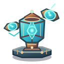
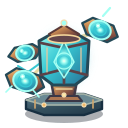
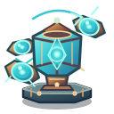
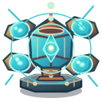
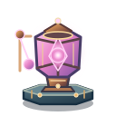
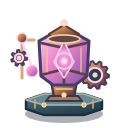
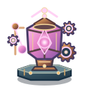
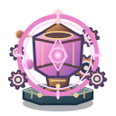
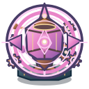
Основная специализация всегда остаётся полноразмерной моделью пятого тира. Вторичная ветка первого или второго тира добавляет отдельный прозрачный слой поверх неё.
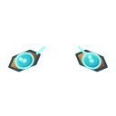
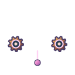
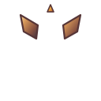